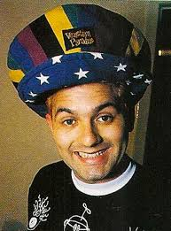
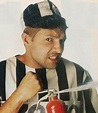
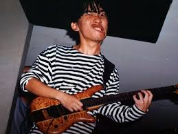
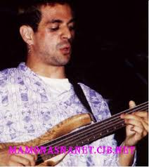
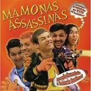
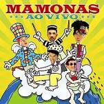
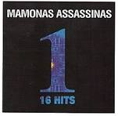
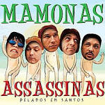

Banda de comico:
Historia da Banda
Mamonas Assassinas, anteriormente chamada de Utopia, foi uma banda brasileira de rock cômico formada em Guarulhos em 1990. Seu som consistia numa mistura de pop rock com influências de gêneros populares, tais como sertanejo, brega, heavy metal, pagode,[1] forró, música mexicana e vira. O único álbum de estúdio gravado pela banda, Mamonas Assassinas, lançado em junho de 1995, vendeu mais de 3 milhões de cópias no Brasil, sendo certificado com disco de diamante comprovado pela ABPD.
Com um sucesso "meteórico", a carreira da banda (sob o nome Mamonas Assassinas) durou pouco mais de sete meses, de 23 junho de 1995 a 2 de março de 1996, quando o grupo foi vítima de um acidente aéreo fatal sobre a Serra da Cantareira, o que ocasionou a morte de todos os seus integrantes, causando grande comoção nacional. A banda continuou influenciando a cena musical nacional e sendo celebrada mesmo 22 anos após seu fim.
Integrantes da Banda
Abaixo sao citados alguns integrantes da banda "Mamonas Assassinas"

|
Dinho | Vocalista |
|  | Julio Rasec | Instrumentos de teclas |
|  | Segio Reoli | Baterista |
|  | Bento Hinoto | Guitarrista |
|  | Samuel Reis de Oliveira | Baixista |
Discografia da Banda
Principais Discografia da banda:
Data da ultima Atualização: DESCONHECIDA
|  | Atenção, Creuzebek: a Baixaria Continua!Nightmare |
|  | Mamonas Ao Vivo |
|  | One: 16 Hits |
|  | Pelados em Santos |